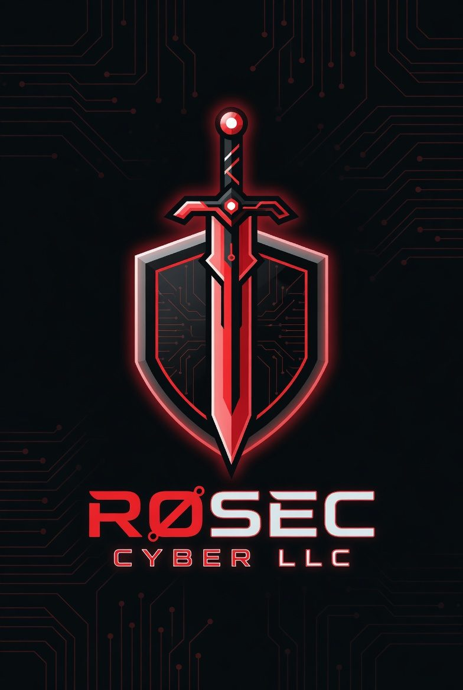
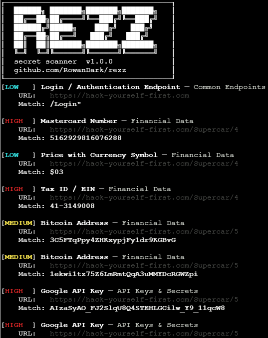
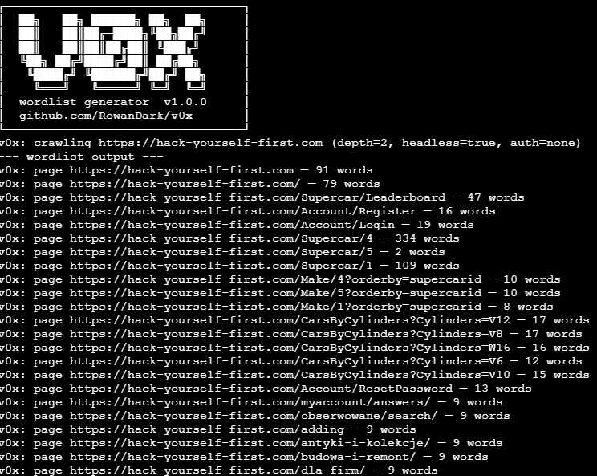
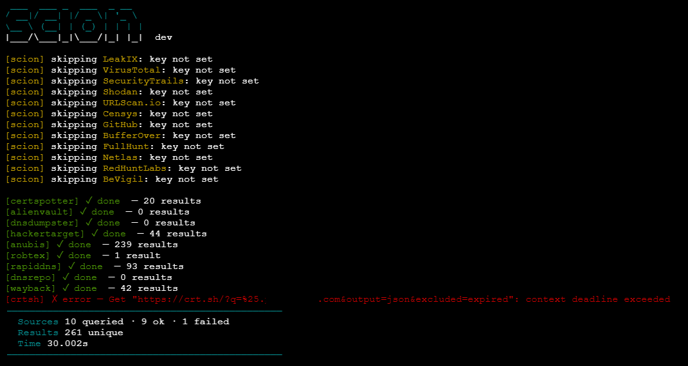

SASA
active
Port scanner built for low-noise recon. Designed to minimize detection footprint during active engagements while maintaining accuracy across common service ports.
github.com/RowanDark/SASA
Port scanner built for low-noise recon. Designed to minimize detection footprint during active engagements while maintaining accuracy across common service ports.
github.com/RowanDark/SASAA web crawler and secret scanner for authorized security testing. Crawls target sites using either a headless Chromium browser or a lightweight HTTP client, scans discovered pages and scripts for secrets and sensitive data using embedded regex pattern kits, and maps all reachable endpoints.
github.com/RowanDark/rezzA modern web wordlist generator written in Go. Conceptually similar to CeWL but with headless browser support, structured output formats, and optional authentication.
github.com/RowanDark/v0xScion is a passive reconnaissance tool for discovering subdomains and related domains associated with a target. It aggregates results across multiple public certificate transparency logs, DNS datasets, and optional API-backed sources -- then deduplicates, optionally validates and outputs in your format of choice.
github.com/RowanDark/scion# nmap fast service scan nmap -sV -T4 --open \ -oA recon/nmap_svc \ $TARGET # grab http headers curl -sI $TARGET \ | grep -Ei \ "server|x-powered"
# passive subdomain discovery subfinder -d $DOMAIN \ -o subs_passive.txt # probe live hosts httpx -l subs_passive.txt \ -status-code -title \ -o live_hosts.txt


